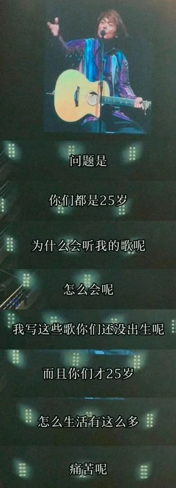
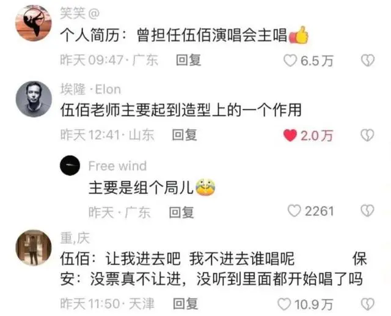

作者 | 腾宇
编辑 | 萧奉
题图｜微博@伍佰
因为他会在演唱会上问年轻人，“你们才25岁，为什么听我的歌呢？”“25岁，你们的生活有那么多……痛苦吗？”这两个问题，问痛了年轻人，也温暖了年轻人。
伍佰演唱会与歌迷互动。（图/小红书@空空）
因为伍佰的歌带着胶片般的颗粒质感，带着闽南的咸鲜、土地的粗粝、季风的灼热，老土却温柔，豪放而洒脱。
因为他总在演唱会上用电风扇吹起那头标志性的长发，汗湿的长发弥漫着专注、热情和野性。
因为他全身都是梗。在大部分的视频里，他没有在唱歌，而是看着全场数万名淘气包的恶作剧般的大合唱，造出“不用自己唱的演唱会”“唱不了一点”“开演唱会废腿”“伍佰哑了两年都没人发现”“开了十年演唱会话筒还有三格电”的梗，在短视频平台以极快的速度传递乐子。
网友对伍佰演唱会的热评。（图/抖音截图）
最后实在编不下去了，还有好多啊啊啊啊啊，我放一首伍佰的《白鸽》solo在这，当做结束吧